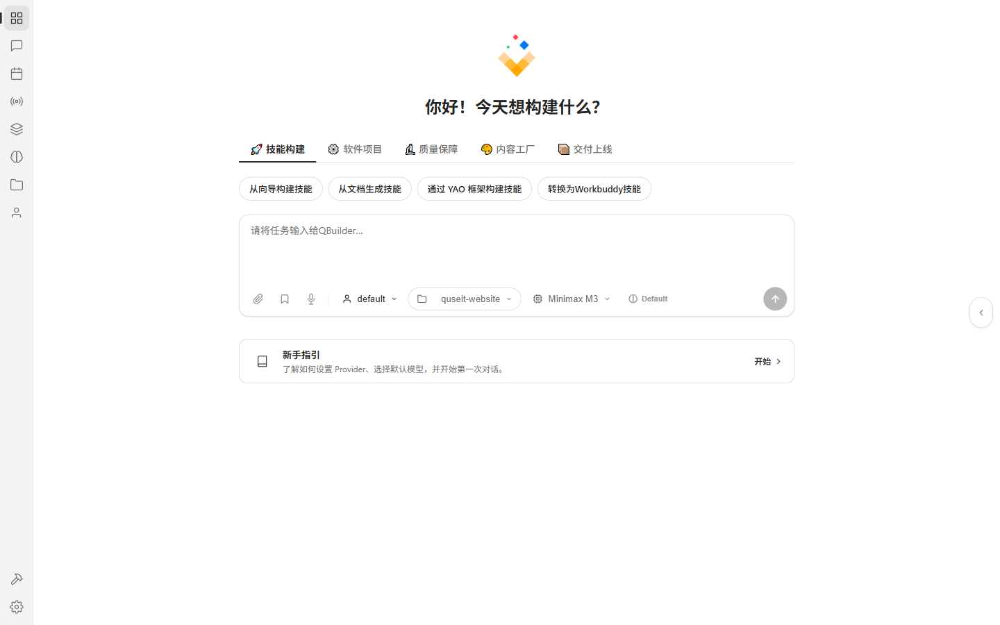
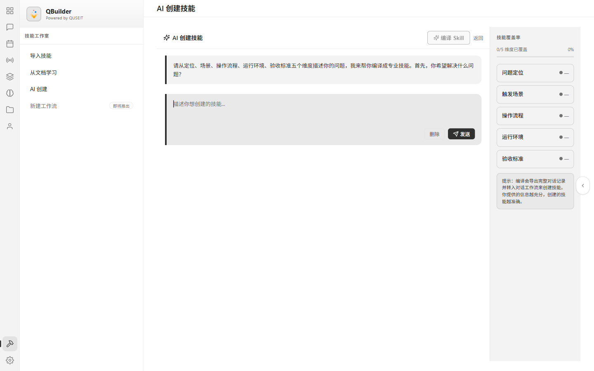
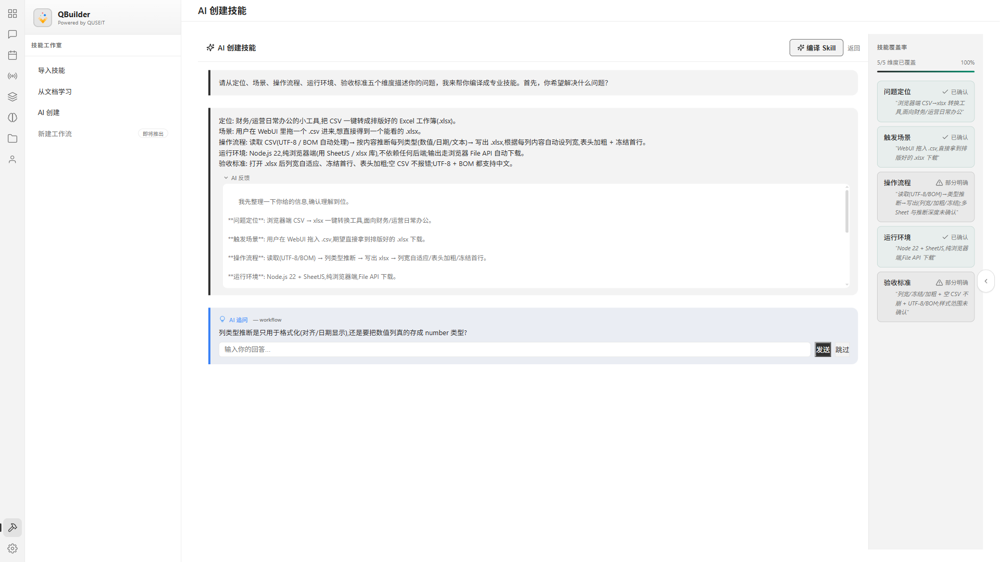
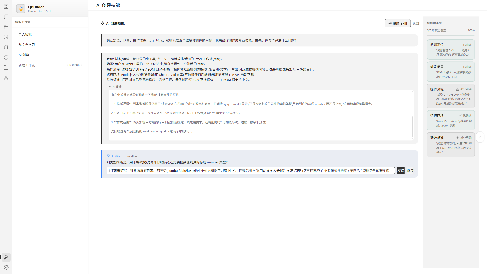
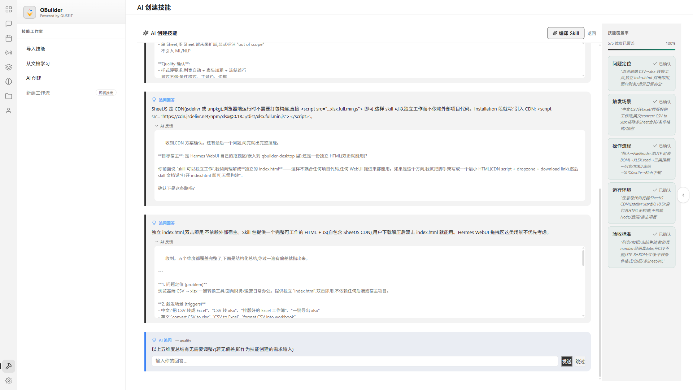
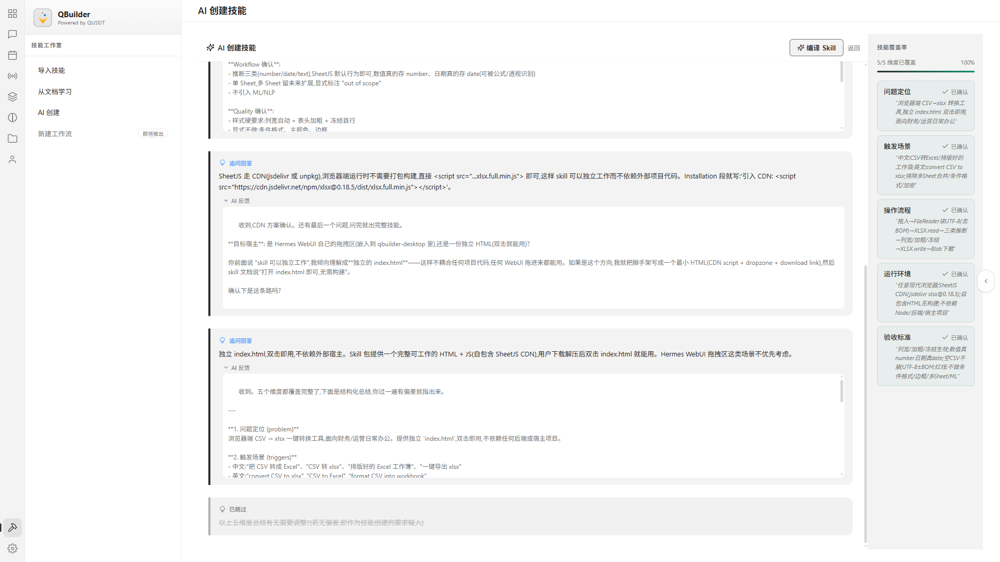
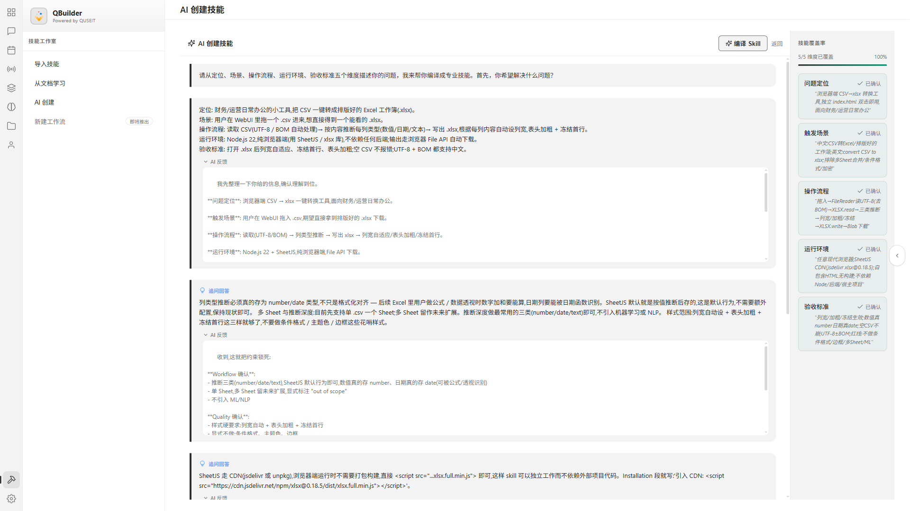
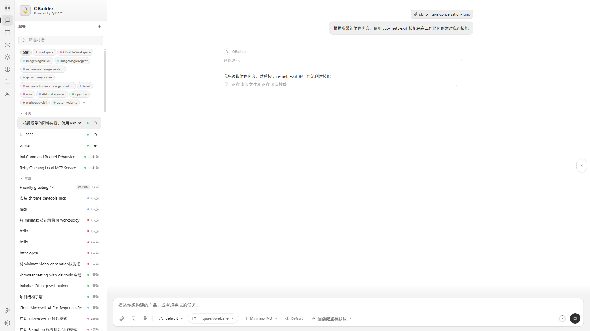
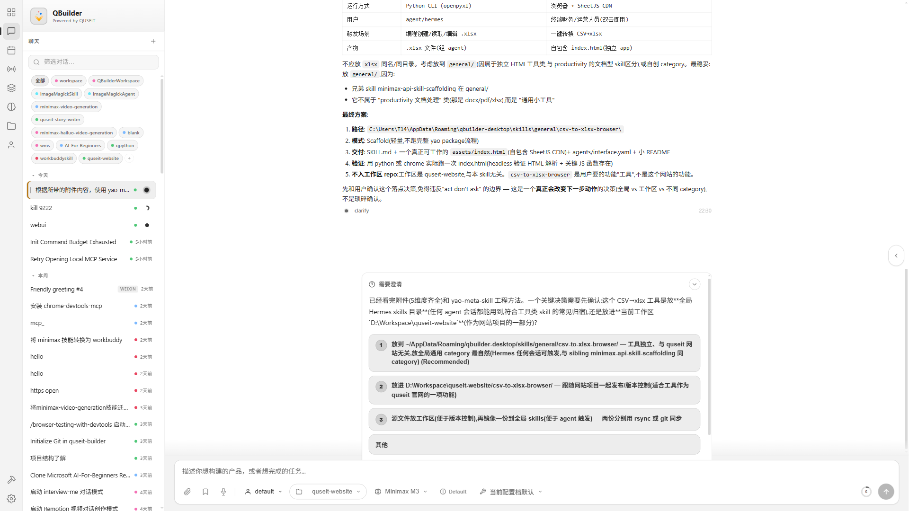
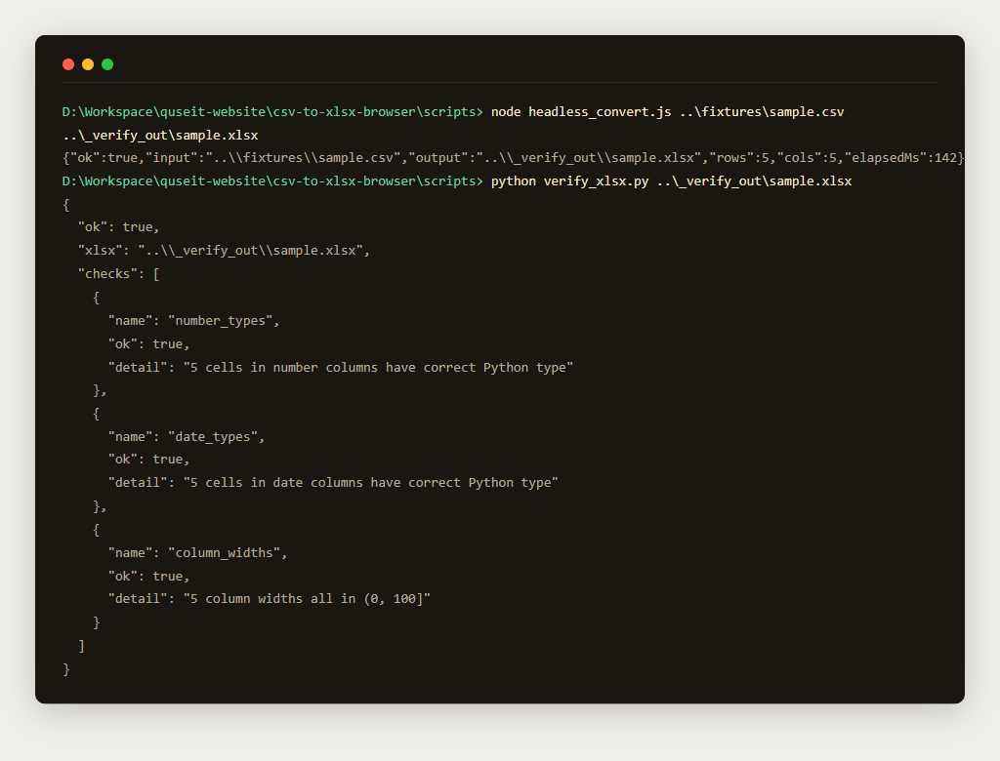

5 分钟创建你的第一个智能体
本课系统介绍从开启 QBuilder 网关、在 Skill Studio 通过多轮问答完成 5 维度评估,到将需求交由 yao-meta-skill 生成最终技能的完整流程。
流程一览
整个流程分为三段:
- 第 0 步:本地启动 QBuilder 网关,后续步骤均依赖此网关。
- 第 1–4 步:在
Skill Studio → AI 创建技能中与 AI 进行多轮对话,完成定位、场景、操作流程、运行环境、验收标准五个维度的评估。右侧覆盖率面板实时更新。 - 第 5–6 步:点击 编译 Skill,AI 将问答内容整理为需求文档,并交由
yao-meta-skill在 workspace 中生成SKILL.md、可执行脚本与测试用例。
关键观察:即便 Desktop UI 偶尔弹出「agent not responding」提示,后端网关仍可能正在运行。如在文件系统中观察到 csv-to-xlsx-browser/SKILL.md(或自定义技能目录)被生成,则可确认 yao-meta-skill 已完成。
第 0 步 · 启动 QBuilder 网关
启动本地网关
QBuilder Desktop 与 yao-meta-skill 均依赖本地网关。若网关未启动,后续所有 Desktop 交互均会出现调用失败或持续 loading。
启动方式
从桌面快捷方式或开始菜单启动 QBuilder。桌面快捷方式图标为橙红色方块,QBuilder logo 居中。
未显示登录界面时的排查
- 查看任务栏或系统托盘是否有 QBuilder 图标闪烁 — 表示正在启动。
- 首次启动耗时较长,通常 10–15 秒。
- 若仍未显示,右键托盘图标 → 选择「退出」 → 重新启动。
第 1 步 · 进入 Skill Studio
登录、Dashboard,进入技能向导
1.1 启动 QBuilder Desktop
启动 QBuilder Desktop → 在登录页填写邮箱密码(亦可使用第三方登录) → 进入 Dashboard。
1.2 定位「从向导构建技能」卡片
Dashboard 上半区为工作流卡片网格,其中第一张卡片即 从向导构建技能(workflow id: workflow-1-1)。

1.3 点击卡片,进入 AI 创建技能
系统将自动跳转至 Skill Studio 面板,左侧导航栏中 AI 创建 项处于高亮选中状态。

第 2 步 · 回答 AI 的第一问(填写 5 维度)
按 5 维度描述需求
2.1 AI 的首轮提问
进入 AI 创建后,系统立即开启多轮对话,首轮提问如下:
请从定位、场景、操作流程、运行环境、验收标准五个维度描述你的问题,我来帮你编译成专业技能。首先,你希望解决什么问题?
2.2 一次性填写 5 维度(降低轮次)
无需等待 AI 逐个提问。一次性填写下列 5 个维度,可显著减少后续追问轮次。
| 维度 | 回答要点 |
|---|---|
| 定位 | 本技能面向的用户群体及其拟解决的问题类型 |
| 场景 | 用户调用本技能的具体使用情境 |
| 操作流程 | 从输入到输出的步骤,描述越具体越好 |
| 运行环境 | 依赖的语言、框架、库、部署方式等 |
| 验收标准 | 判定执行成功的客观条件 |
2.3 提交回答,等待 AI 流式响应
完成填写后,点击文本框右下角的 发送 按钮(或按回车)。AI 将先复述需求、确认理解,随后右侧覆盖率面板开始更新。

第 3 步 · 回答 followup 追问
逐项处理追问
覆盖率到达 100% 后,AI 会提出若干 followup 用于消除歧义。本教程实测共 4 个:
- 列类型推断是仅用于格式化(对齐、日期显示),还是需要将数值列实际存储为 number 类型?
- SheetJS 是经 CDN 加载,还是经 npm 本地打包?
- 目标产物是独立 index.html(双击即用),还是嵌入到 Hermes Desktop 拖拽区?
- 上述 5 维度总结是否有需要调整之处?(若无偏差,即作为技能创建的需求输入)

每个追问的两种处理方式
- 点击「发送」:提供具体回答(2–4 句为佳)。AI 将更新覆盖率摘要。
- 点击「跳过」:不提供回答,默认按 AI 当前理解继续。
若对追问无明确倾向,通常「3 答 + 1 跳」节奏最节省时间,其中「1 跳」对应最终的确认问。


第 4 步 · 点击「编译 Skill」
由 AI 整理需求文档
所有追问均已回答(或跳过)后,右上角的 编译 Skill 按钮将由 disabled 转为 enabled。点击后,AI 将执行以下两步:
- 将本轮所有问答与追问整理为 markdown 格式的需求文档。
- 将该文档注入 yao-meta-skill 的输入,并跳转至新 session 由 yao-meta-skill 接手。


第 5 步 · 等待 yao-meta-skill 落盘
监控 handoff session 与文件系统变化
handoff session 启动后,yao-meta-skill 将在 workspace 中创建技能。UI 是否仍显示「agent not responding」banner 不构成判断依据 — 此为 Desktop UI 心跳机制的误报,后端大概率仍在运行。
通过文件系统判断
在 workspace 根目录(例如 D:\Workspace\quseit-website\)刷新文件管理器:
D:\Workspace\quseit-website> dir
...
<新建目录> csv-to-xlsx-browser\
...若 csv-to-xlsx-browser\(或自定义命名目录)出现,则可确认 yao-meta-skill 正在落盘。
yao-meta-skill 的标准产出结构
csv-to-xlsx-browser/
├── SKILL.md 触发词 + 红线 + 诚实边界
├── manifest.json 结构化元数据
├── README.md quick start + 排除项
├── agents/
│ └── interface.yaml agent 接口
├── assets/ 用户最终消费的产物(独立 index.html 等)
├── fixtures/ 测试 CSV / 测试样本
├── reports/ 意图置信度报告
└── scripts/ 工具脚本 + node_modules(真实依赖)
├── headless_convert.js
└── verify_xlsx.py
第 6 步 · 验证产物
执行 fixtures 端到端检查
yao-meta-skill 通常会同时产出可执行的验证脚本。在 scripts/ 目录下找到 headless_convert.js(或类似名)与 verify_xlsx.py(或类似名),依次执行:
cd csv-to-xlsx-browser\scripts
npm install # 装 SheetJS 等依赖
node headless_convert.js ..\fixtures\sample.csv ..\_verify_out\sample.xlsx
python verify_xlsx.py ..\_verify_out\sample.xlsx
# 预期输出:
{
"ok": true,
"checks": [
{ "name": "number_types", "ok": true, "detail": "5 cells in number columns have correct Python type" },
{ "name": "date_types", "ok": true, "detail": "5 cells in date columns have correct Python type" },
{ "name": "column_widths","ok": true, "detail": "5 column widths all in (0, 100]" }
]
}全部 "ok": true 即代表产物合格。

最终结果
完成上述 6 步后,workspace 中已生成:
- 完整的 SKILL.md(含触发词、红线与诚实边界)
- 可执行 scripts/(含真实 npm 依赖与 Python 校验脚本)
- 覆盖边界场景的 fixtures/
- 面向用户与开发者的 README.md
其能力将由 QBuilder 全局识别,后续可使用日常语言(如「把这份 CSV 转成 xlsx」)直接调用。
常见踩坑
- Desktop banner 报「agent not responding」:该提示为 Desktop 心跳检测的误报,后端仍在运行。以文件系统是否出现新目录为准,不要以 banner 状态为判断依据。
- 需要修改之前的回答:对话流中没有「上一步」按钮。修改已提交回答需点击对应 cell 旁的删除按钮,或重新打开 Skill Studio 走一遍。
- 点击「跳过」无响应:请确认点击的是追问 cell 旁的「跳过」,而非覆盖率面板内的项目。